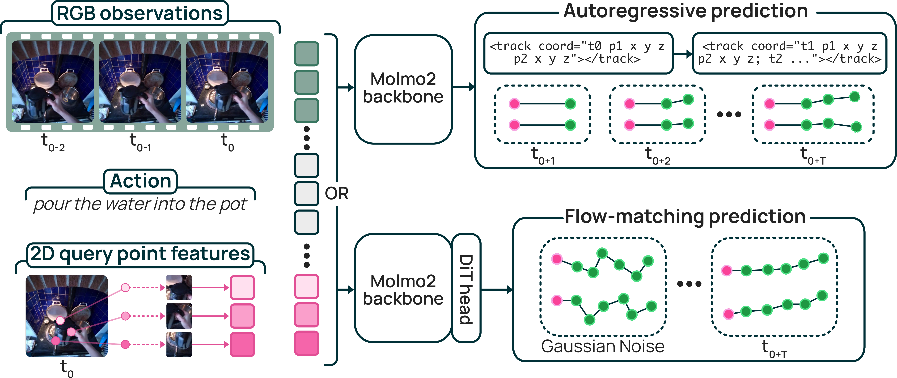
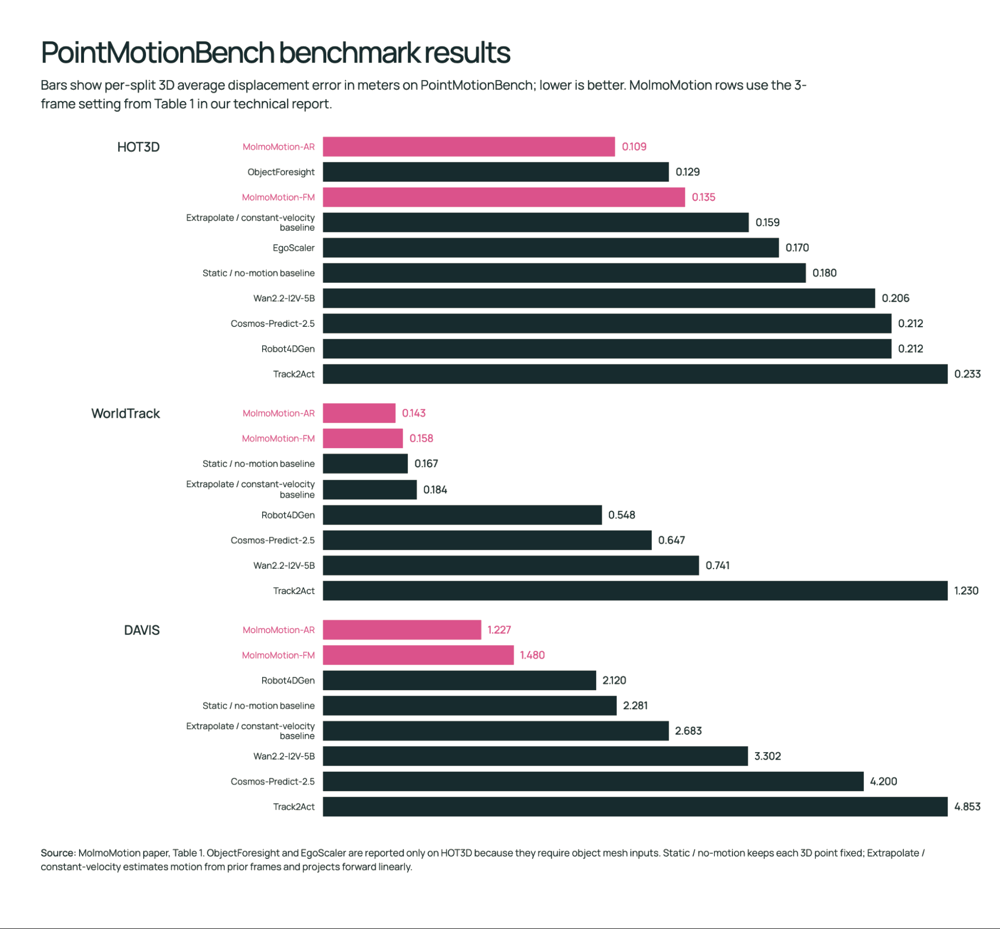

3D Motion Forecasting
Given a visual history, query points on an object, and a language instruction, MolmoMotion predicts the future 3D trajectory of each point, capturing rigid, articulated, and deformable motion across indoor, egocentric, and outdoor scenes.
I. Robotics Planning
Object motion in 3D is largely embodiment-agnostic, so the prior learned from human video transfers to robots. Fine-tuned on real-robot videos from DROID, MolmoMotion forecasts coherent object trajectories, and initializing a manipulation policy from it improves downstream pick-and-place.

II. Video Generation
MolmoMotion's predicted 3D trajectories act as an explicit motion-control signal for image-to-video generation. Conditioning on them makes the generated motion follow the instruction more faithfully than text alone.
Our MolmoMotion Framework
MolmoMotion builds on the Molmo 2 vision-language backbone, which grounds the language instruction to objects and points in the image. From image tokens, the action description, and 2D query-point features, it decodes each point's future 3D trajectory in two variants: an autoregressive model (MolmoMotion-AR) that emits coordinates as quantized text, and a flow-matching model (MolmoMotion-FM) that generates continuous trajectories from noise.

Training Data: MolmoMotion-1M
MolmoMotion-1M supplies the supervision this task requires: large-scale video paired with object-grounded 3D point trajectories and action descriptions. Because no existing dataset offers this combination, we generate it with an automatic pipeline that extracts object-grounded 3D trajectories from unconstrained video.
The pipeline lifts dense 2D tracks into a shared metric 3D frame, removes points that do not move coherently with the object, smooths the rest, and clips each video to the window of real motion. At scale it yields MolmoMotion-1M, to our knowledge the largest corpus of action-described, object-grounded 3D point trajectories to date, spanning 736 motion types and 5.6K distinct objects.
PointMotionBench
PointMotionBench measures 3D motion-forecasting accuracy on held-out data. It comprises 2.7K human-validated clips across 111 object categories and 61 motion types, spanning indoor manipulation, egocentric hand-object interaction, and outdoor dynamic scenes. Each method receives the current observation, query points, and an action description, and is scored on how closely its predicted 3D trajectories match the object's true future motion, a direct quantitative test rather than whether a track merely looks plausible.

Limitations
MolmoMotion uses only 8 query points per object, which limits dense geometry and complex deformable motion; broader real-world and closed-loop evaluation remains future work.
BibTeX
@article{zhang2026molmomotion,
title = {MolmoMotion: Forecasting Point Trajectories in 3D with Language Instruction},
author = {Zhang, Jianing and Zheng, Chenhao and Yang, Yajun and Argus, Max and
Soraki, Rustin and Han, Winson and Li, Chun-Liang and Liu, Shuo and
Duan, Jiafei and Ren, Jason and Zhang, Jieyu and Krishna, Ranjay},
journal = {arXiv preprint},
year = {2026}
}
Acknowledgments
[Acknowledgments placeholder.]